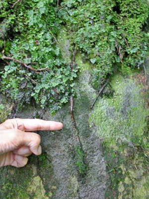
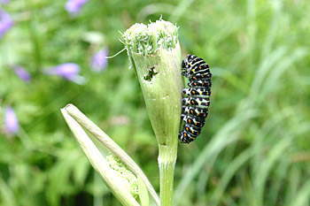
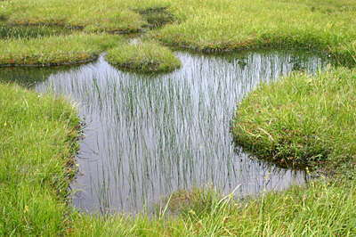

| Ａ |  |
|
| 志賀自然教育園資料館には、 動物・植物の標本が保存されている |
資料館を出て、ロックガーデンで 早速、先生のレクチャーが始まる |
| 奥志賀高原----山の自然学シリーズ（５） 「ＮＰＯ法人 山の自然学クラブ」のインプリとミニトーク |
| ＮＰＯ法人「山の自然学クラブ」の奥志賀活動は、今年で３年目を迎えた。 昼は、講師や会員による自然解説ツアー（インタープリテーション、略してインプリ）、夜は、ホテルで宿泊客を相手に自然に関するスライドショーやお話（略してミニトーク）をする。 奥志賀といっても宿泊地が奥志賀にあるというだけで、活動の範囲は志賀高原全域である。まだまだ全域の案内はできないが、今までに、奥志賀渓谷コース、岩菅山、焼額山、一ノ瀬のシナノキ、東館山高山植物園、信州大学自然教育園、志賀山、四十八池巡り、、前山湿原、などを探訪した。今年は、先生によるガイドツアーが楽しみである。 （2005年8月） |
||
| アザミの花に誘われるのは、何蝶？ |
| 奥志賀高原歩行部分の全行程 （ＧＰＳによる自動記録） |
| 画像をクリックすると大きくなります ご覧になった後、ブラウザの[戻る]で、お戻り下さい |
| ８月４日（木） |
| 池田昌史のミニトーク |
| シャレー・クリスチャニアで、毎日夕食後開催されるミニトークの第１日目は、池田さんです。 テーマは、 動 ━ 地球の構造と動く大地・海底 ━ でした。 |
| 瀟洒なシャレー・クリスチャニア |
| ８月５日（金） |
| 信州大学教育学部 志賀自然教育園 |
| 信州大学教育学部の井田秀行先生（植物生態学）に、信州大学志賀高原自然教育園を案内して頂きました。 熱心なご説明は、昼食をはさんで、１０：００〜１５：００にわたりました。 |
| 信州大学志賀自然教育園 |
| Ａ | |
|
| 志賀自然教育園資料館には、 動物・植物の標本が保存されている |
資料館を出て、ロックガーデンで 早速、先生のレクチャーが始まる |
| Ａ | ||
| 長池（海抜1584m）は、志賀火山の新しい溶岩台地 （左）と古い溶岩台地（右）の間の窪地にできた志賀 高原で３番目に大きな池。流入出する川はない |
根上がりしたコメツガ（マツ科 ツガ属） 倒木の上で発芽し、成長後倒木が腐食した のであろう（倒木更新） |
| Ａ |  | |
| 「たこ松」の異名を持つコメツガ 岩の上で発芽し、根が伸びたのだろうか |
裏に回ってみると、細い根にコケが付き コケが水分を供給していることが分かる |
| Ａ | ||
| コメツガは、淡い緑が今年のもので、１年に１段づつ枝が生える。したがって、この写真の範囲で６年。 | 枝先から根元までの枝分れの数を数えると、 木の年齢が分かる。この木はなんと１５歳 |
| Ａ |  |
|
| 確かここにヒカリゴケがあったはず- - - |
ヒカリゴケは、透明な細胞膜を通して中の葉緑素が外 光を反射するので、緑色に発光しているように見える |
| 見学の途中で、皆で広場でお弁当 右にスクロールしてご覧下さい→ |
| Ａ | Ａ | |||
| アザミに誘われるのは何蝶（？） | 虫を呼ぶノリウツギ | ツクバネソウ |
| Ａ | Ａ | |||
| セリバオウレン（キンポウゲ科 オウレン属）の実。黄連（おうれん）は根茎を乾燥したもので、健胃・整腸薬 | ギンリョウソウ（銀竜草 イチヤクソウ科 ギンリョウソウ属） 腐生植物、この下に動物の死体があるかも - - - | タケシマラン（ユリ科 タケシマラン属）の実 |
| Ａ | Ａ | |||
| アカミノイヌツゲ（モチノキ科 モチノキ属）の実 |
コバノイチヤクソウ（イチヤクソウ科 イチヤクソウ属） |
クロベ（ヒノキ科 クロベ属）の木肌につた地衣類（藻類と菌類の共生体） （俗称ワカメキノコ） |
| 大 倉 新 道 |
| 自然教育園の見学の後、長谷部恒雄さんの案内で、大倉新道のブナの原生林を見に行きました。 |
| 大倉新道のブナの原生林 |
| Ａ | ||
| 高天原から西館山を越えてブナ平ゲレンデを下る |
| Ａ | ||
| ニワトコの実 | ||
| 大きなブナは幹回り３mくらい | ヤマアジサイ |
| 大森弘一郎のミニトーク（その１） |
| シャレー・クリスチャニアでの２晩目ミニトークは、大森さんです。 テーマは、地球温暖化の話 から 氷河の後退の話、さらにそれを確認するための 航空写真撮影の話 でした。 |
| ８月６日（土） |
| 東館山高山植物園 |
| 東館山高山植物園園長の春原先生にお会いする予定でしたが、先生はご都合が悪く、代りに園を管理しておられる児玉さんに案内して頂きました。 |
| 東館山高山植物園 |
| Ａ | ||
| 東館山ゴンドラリフトで東館山山頂（標高2000m）へ | 児玉さんの説明を聞きながら高山植物園を一周 |
| Ａ | ||
| ゼンテイカ（ニッコウキスゲ、ユリ科 キスゲ属） | アカバナシモツケソウ（バラ科 シモツケソウ属） |
| Ａ | ||
| コマクサ（ケシ科 コマクサ属）は、 草津白根山から移植したという |
コマクサは、こんな小さなものでも 発芽してから２〜３年かかる |
| Ａ | ||
| ぶえもん池 |
バイケイソウ（ユリ科 シュロソウ属） の花のクローズアップ |
| Ａ | ||
| オゼコウホネ（スイレン科、コウホネ属）、ミツカシワ （ミツカシワ科 ミツカシワ属）などの育つ池に --- |
クロサンショウウオがいた |
|  | Ａ | |
| どんな蝶になるのでしょう |
クガイソウ（ゴマノハグサ科 クガイソウ属） の花に止まるヒョウモンチョウ |
| いつものところで記念写真 |
| 上信越遊歩道 奥志賀渓谷コース |
| シャレー・クリスチャニアの関オーナーが、緑色凝灰岩（グリ−ンタフ）の見られる渓谷を案内して下さった。 |
| 上信越遊歩道 奥志賀渓谷コース |
| Ａ | ||
| 素晴らしいブナ原生林 |
 |
Ａ | |
| クマゲラがねぐらを作ったブナの大木 | 三段滝（？）が現れる |
| Ａ | ||
| この辺りの河床は緑色凝灰岩である。1500〜2000万年前、ここが海底であったときに、海底火山から噴出した火山灰が固まってできた岩が隆起して地上に現れたといわれている。 | ||
| 西田進のミニトーク |
| シャレー・クリスチャニアでの３晩目のミニトークの担当は、西田でした。 ３つのテーマを、PowerPointによるスライドショーで説明しました。 中央構造線と列島誕生 志賀高原はどのようにして出来たか したたかな植物たち |
|
| ８月７日（日） |
| インプリ（四十八池巡り） |
| 昼間のインタープリーテーション（ハイキングをしながら自然解説）は、 お客さんがただ１人。 しかし大森さんと西田が、四十八池巡りコース をご案内しました。 |
| 四十八池巡りコース |
| Ａ | Ａ |  |
|||||
| 硯川から前山リフトに乗る | 象山の森の標識 | 渋池（この写真だけは昨年同時期のもの） | |||||
|
|||||||
| Ａ | Ａ | |||
| 四十八池への道から見える崩壊地 ここは10〜15万年前に噴火した志賀火山の溶岩台地で、表土は薄い。 |
崩壊地にコメツガの幼樹が育っている。これでも発芽して３年。 |
ある種の変性菌が付くと木材が堅くなり腐食し難くなるらしい。 赤布が付けられているところを見ると観察している人がいるのだろう。 |
| Ａ | ||
| 四十八池 オレンジ色のものはモウセンゴケ | ||
|  | Ａ | |
| ホタルイ |
ワレモコウ（バラ科 ワレモコウ属） 吾亦紅と書く（吾もまた赤いぞという意味か） |
| 雅子妃殿下も休まれた場所とか |
| Ａ | Ａ | |||
| 前山リフトの駐車場の下の湧水で４種類の水質検査をする | ＣＯＤ（化学的酸素要求量）は１程度で、まずまず | |||
| Ａ | ||
| 志賀高原清水公園にある「志賀の源水」の水質検査も行う。 ここも、まずまずであった。 | ||
| 大森弘一郎のミニトーク （雷鳥と志賀高原の地図作り） |
| シャレー・クリスチャニアでの４晩目のミニトークは、大森さん。テーマは、 温暖化で減少しつつある雷鳥の話 粘土で作る志賀高原の立体模型 |
| かくて、今年の夏の奥志賀高原インプリとミニトークは終わりました。参加下さった皆さん有難うございました。 来年は、あなたも活動に参加されませんか！ |
| NPO 山の自然学クラブについて知りたい方は、右をクリックして下さい。 ご覧になった後は、ブラウザの[戻る]で、このページにお戻り下さい。 |
|
|
|
|
| ホームページの中で検索したい |
|
ホームページの中で道に迷ったら |
|